Back to Cuzco
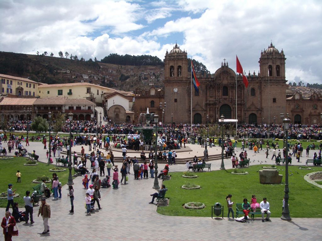
Every Sunday there is a small parade held through the streets around the Plaza de Armes, and we caught up with one of these - which seemed to feature politicians, the military, children and effigies of pigs (??) - on our return to Cuzco.
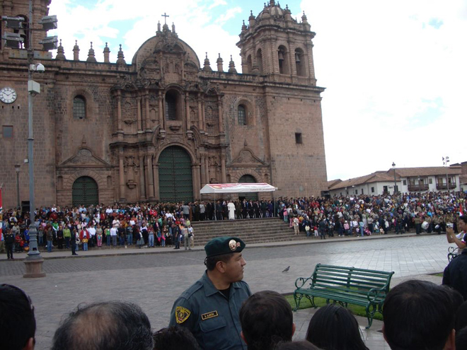
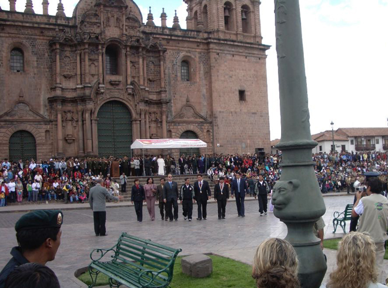
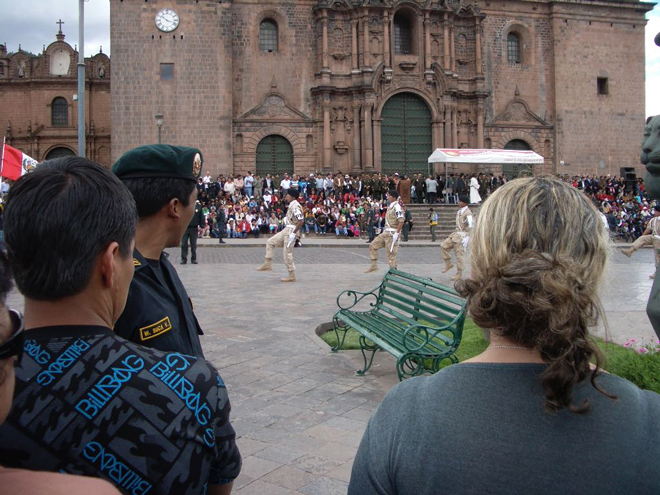
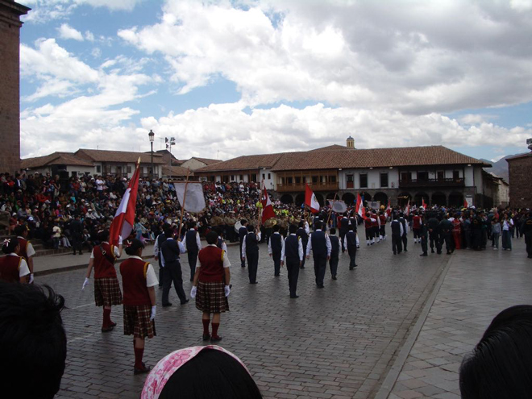
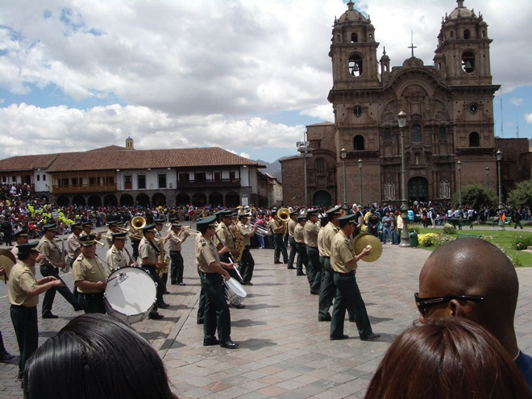
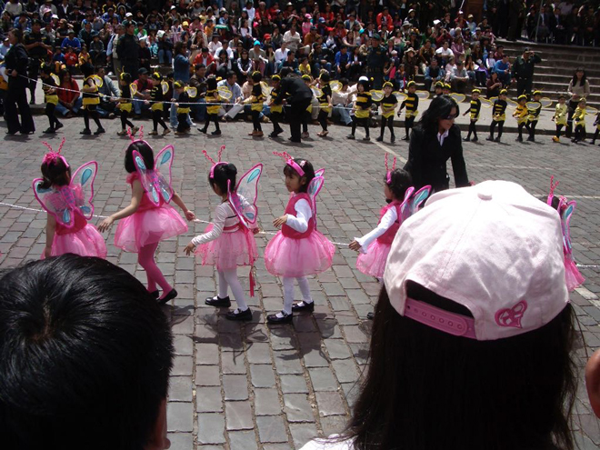
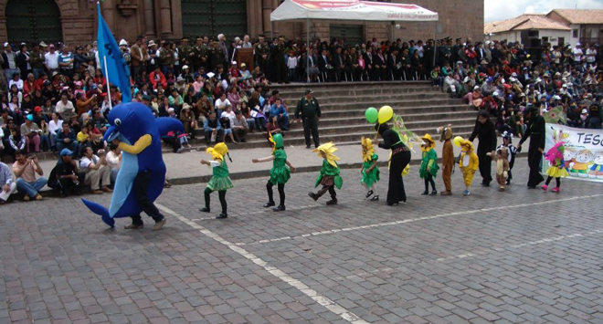
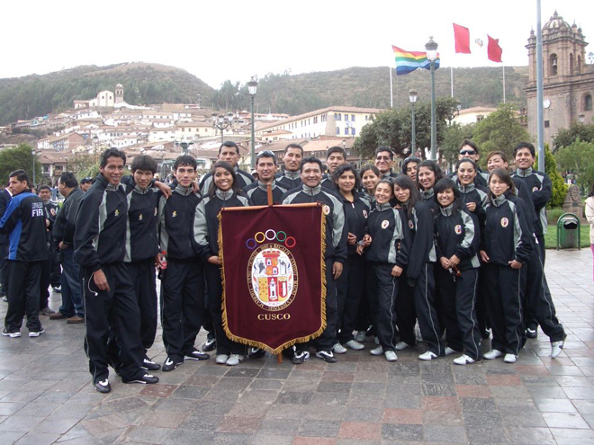
.
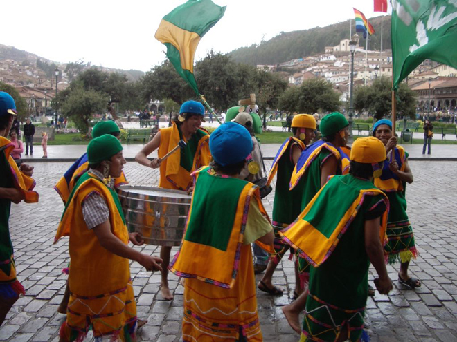
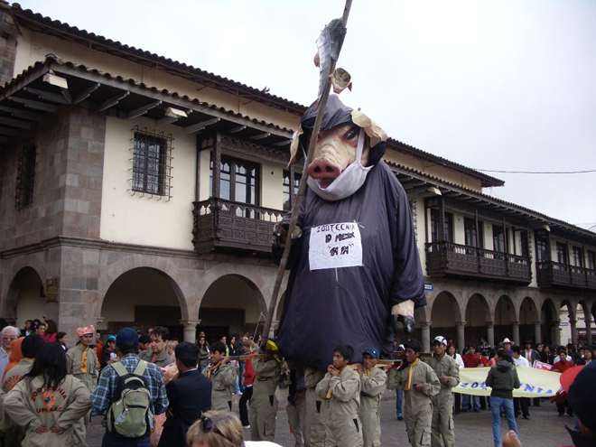
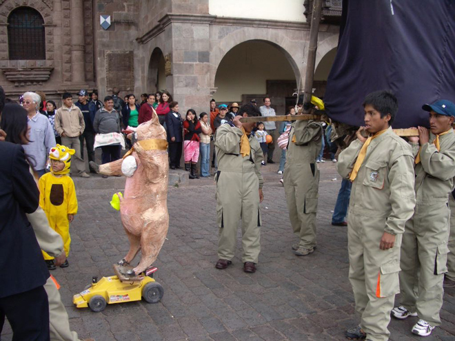
The parade was enjoyed by tourists and locals alike.
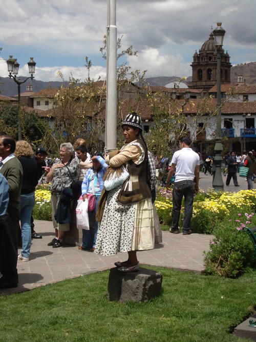
We could also get into both the Cathedral and the Iglesia de San Blas and marvelled at the amount of gold leaf covering every surface. Clearly it shocked me as my photos are very out of focus - my hands must have been shaking ...
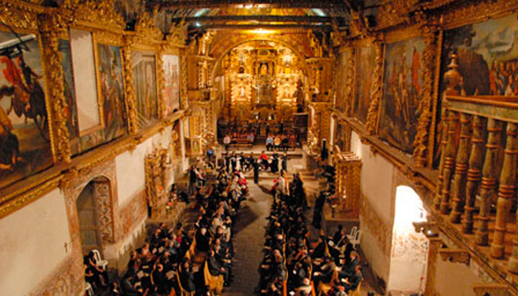
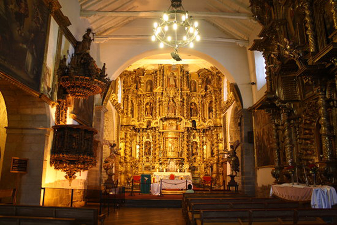
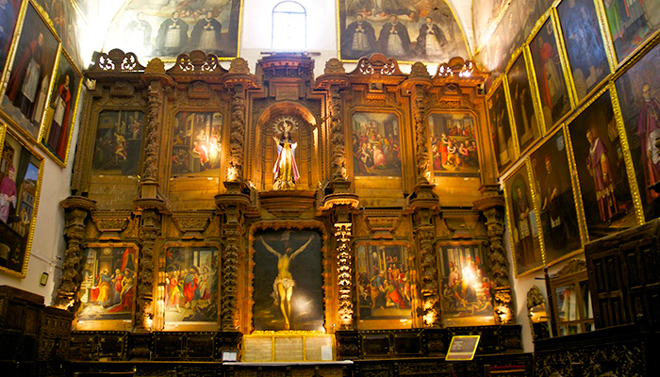
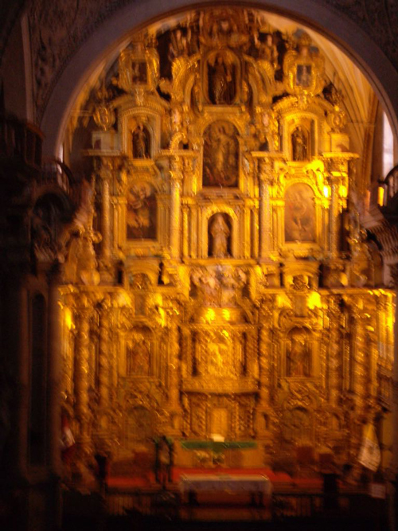
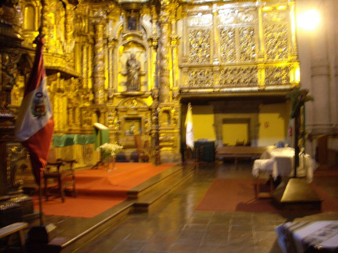